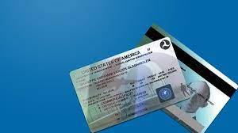

-Kinds of pilot license

- Private Pilot License(PPL)
- Commercial Pilot License(CPL)
- Airline Tranport Pilot License(ATP)

3.Airline Transport Pilot License
- The airline transport pilot (ATP) is tested to the highest level of piloting ability.
- The ATP certificate is a prerequisite for serving as a PIC and second in command (SIC) of scheduled airline operations.
It is also a prerequisite for serving as a PIC in select charter and fractional operations. The minimum pilot experience is 1,500 hours of flight time. In addition, the pilot must be at least 23 years of age, be able to read, write, speak,and understand the English language, and be “of good moral standing.” A pilot may obtain an ATP certificate with restricted privileges enabling him/her to serve as an SIC in scheduled airline operations. The minimum pilot experience is reduced based upon specific academic and flight training experience. The minimum age to be eligible is 21 years.